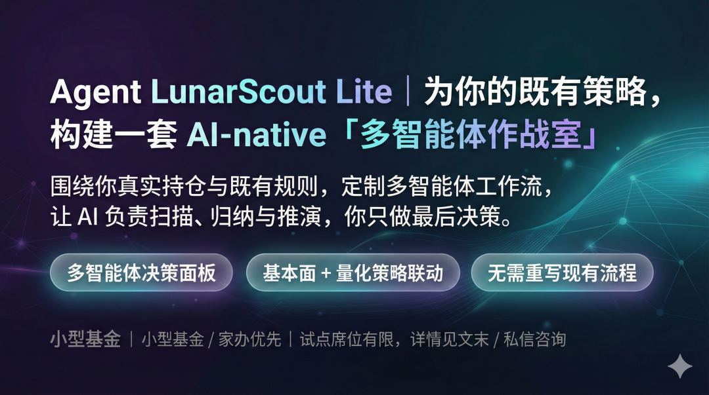

如果你做过交易，一定有过这种时刻：
盘中盯着屏幕，价格在预期的区间里来回震荡，逻辑没有被证伪，但你还是开始犹豫
不是因为认知上不知道该不该买，而是会被突如其来的不确定包围：
此刻出手，到底是判断，还是情绪。
这正是我决定开始搭这套 Agent OS 的起点，守住认知的边界。
我不是想做一个下单更快的系统，也并不想把交易完全交给模型。我真正想解决的，是一个所有基金经理都很熟悉、却很少被系统化的问题：
一个判断，是如何一步步，变成一笔真实交易的？
一、基金经理的一天，并不是从下单开始
观察一位成熟的基金经理的一天，每天工作的重点反而不是从全市场找交易机会。
而是从确认边界开始。
开盘前第一件事，往往不是问今天买什么，而是问：
今天在什么情况下，我不应该动手。
隔夜市场发生了什么，哪些变量已经改变，哪些判断依然成立，哪些其实已经悄悄失效——这些东西如果没有在开盘前想清楚，盘中大概率会被情绪裹挟。
所以在真实世界里，开盘前的核心工作是：
把“判断”从混沌状态里拎出来。
二、盘中最重要的不是涨跌，而是判断是否被破坏
很多外行以为，盘中就是盯K线、盯盘口、盯价格。
但对真正做决策的人来说，盘中更像是在不断回答一个问题：
我早上的判断，还站得住吗？
价格上涨，并不等于判断正确； 价格下跌，也不必然意味着判断错误。
真正危险的，是有意识地发现原本的逻辑已经出现松动的迹象，却在盯了大半天盘面之后心生犹疑，要不然再等等？这一等就与最佳决策时机完美错过了。
盘中的工作，除非遇到属于自己风格的机会，本质上是监控，而不是行动。
这也是我在系统里，把盘面风险监控和交易执行拆成独立运行模块的原因。
三、真正的执行，发生在判断已经被写清楚之后
在这套 Agent 里，每一次可能进入交易的行为，都会先生成一份 Decision Brief。
它不是交易指令，而是一份判断说明。
它会明确写下：
交易者、同时也是这个系统的拥有者， 在关注什么标的， 现在倾向于哪个方向， 对这个判断的置信度有多高， 以及，
这个判断，是否允许在没有人工确认的情况下被执行。
只有当这份判断被系统接受，风险条件被确认，执行模块才有资格接手。
在这里，执行不是结果，而是一种被批准、可溯源的行为。
四、风控不是一个模块，而是一种态度
很多系统把风控理解成限制约束， 但在真实交易里，风控更像一种态度。
它体现在：
当判断和价格出现背离时，是否允许系统替你踩刹车； 当频率开始异常时，是否有提醒让你及时发现； 当执行完成后，是否有人把这一切如实记录下来。
所以在这套系统里，风控的角色远超过简单的参数校验。
它更像一个始终站在旁边、不断发问的角色：
你现在做的，还是你早上说的那件事吗？
真的有做到，知行合一么？
五、收盘后，才是真正决定长期收益的时刻
如果说盘中决定的是一天的盈亏， 那收盘后决定的，往往是你未来几年的曲线形态。
这也是为什么我非常坚持：
每一天的判断、执行、结果，都必须被完整地保存下来。
不是为了回看收益，而是为了回看：
当时的判断环境是什么， 当时你为什么会这么想， 以及哪些错误，是可以避免的。
在系统里，这些内容会进入一个长期保存的 Vault， 可以被回放、被复盘、被重新理解。
六、用 AI 替我交易？
更克制但高级的用法是，用系统的能力帮你守住认知的边界，提前规避随机性有概率成为最大风险源的可能性。
构建这套 Agent OS的意义，我的关注点可能跟多数人不用，我的点没有放在它能不能自动赚钱， 我会更倾向认为，系统的价值于它是否能在关键时刻，
让我对自己的判断负责。
如果一个系统， 能在你最想冲动的时候逼你把逻辑写清楚， 能在你最自信的时候提醒你检查风险， 能在你最疲惫的时候帮你完整复盘——
这也是AI投研交易系统的力量。
它是在替你守住，作为基金经理最重要的一件事。
真正专业的交易，不是把决策交给系统， 而是让系统，逼你成为一个始终自洽的决策者。
关于Lab · 定制项目招募
LunarScout · Multi‑Agent Copilot
把你的投研流程交给一组协作 AI Agent项目招募 围绕你现有投研交易习惯设计的 Multi‑Agent 投研交易Agent OS，与OpenClaw打通协同使用（可选），可部署于用户本地/ 云服务器。 
即将推出 LunarScout v2 Trading Oriented 进阶版本定制，连接负责交易执行下单和风控巡航的agent完整系统，感兴趣可后台滴滴
知识星球介绍：当我把组合管理变成一间 AI 实验室
Lab方法论精选
004｜AI Analyst Agent：投研团队的认知外挂